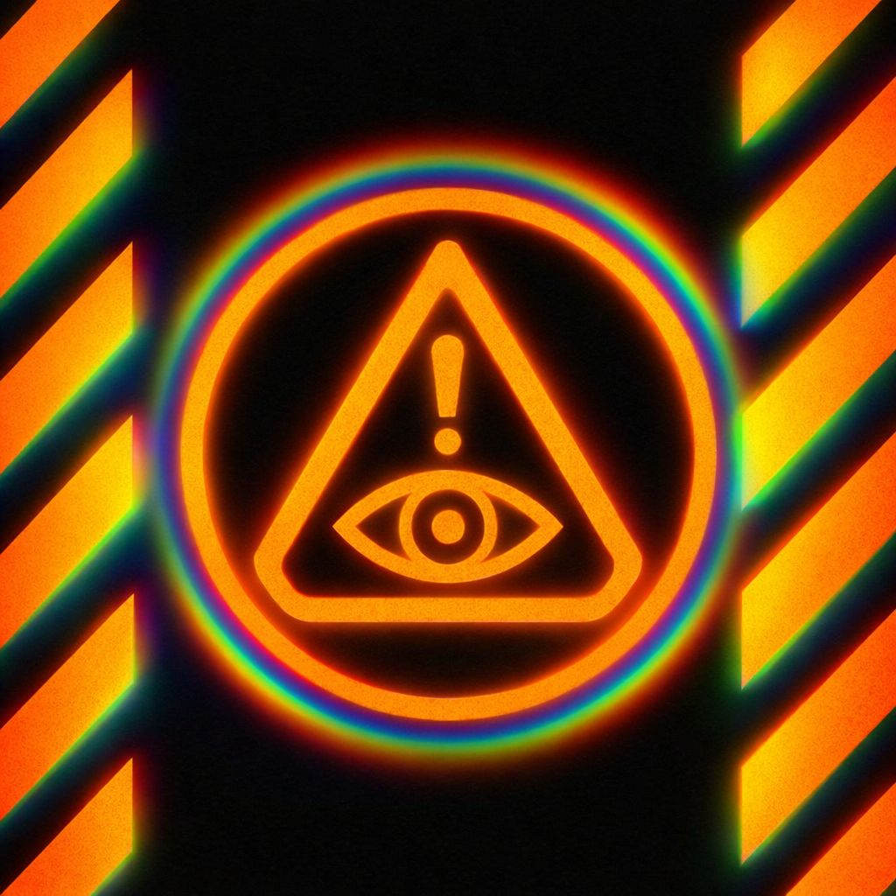

Before you form an opinion…
before you pick a side…
before you even realize something “got to you”…
the system has already begun.
Not through force.
Not through logic.
Through pressure.
📡 Signals arrive
🧲 Attention gets pulled
⚡ Speed increases
🧠 Meaning starts assembling
And it happens fast. Faster than conscious thought.
What you’re about to see isn’t content.
It’s mechanics.
Not beliefs to adopt.
Not positions to defend.
Pressure points to recognize.
Each one is a place where:
your focus can be captured
your emotions can be accelerated
your identity can be subtly shaped
Most people only notice the outcome:
👉 the argument
👉 the outrage
👉 the certainty
IPT looks earlier.
👁️ This is the layer before reaction.
Where attention bends.
Where stories begin forming.
Where meaning is still… soft clay.
Miss this layer…
and the system runs you.
See it early…
and the whole chain starts to loosen.
🧠 Use this like a field guide.
Not to fight others.
Not to win debates.
But to catch the moment before it locks in.
Because once it locks…
you’re not just reacting to information.
You’re reacting to a constructed reality.
🧩 Now… step into the mechanisms.
When something pulls your focus hard… it’s usually engineered to.
novelty spikes
emotional hooks
unresolved tension
👉 Attention isn’t random. It’s captured.
Not what you think… how fast it hits.
instant certainty
rapid emotional escalation
no pause for context
👉 Speed bypasses discernment.
Before you speak… the system casts you.
hero
villain
victim
traitor
👉 Once cast, everything you do gets interpreted through that role.
The story forms early… and filters everything after.
new info gets bent to fit
contradictions get ignored
certainty increases
👉 The mind protects the first version it builds.
The brain fills in gaps automatically.
missing context gets assumed
intentions get invented
meaning gets “completed”
👉 You’re reacting to a full story that was never fully there.
The system feeds itself.
engagement brings more of the same
reactions train the algorithm
repetition builds belief
👉 What you interact with… grows.
One belief links to another.
opinion → group → worldview → self
disagreement feels like total attack
👉 It’s never “just one issue.”
Overload weakens discernment.
constant input
no recovery time
increased irritability
👉 Tired minds react faster, think less.
Complex systems get reduced to one cause.
“it’s them”
“this is the problem”
“remove it, fix everything”
👉 Simplicity feels good… but hides reality.
A value gets hit directly.
fairness
safety
identity
belonging
👉 Once triggered, neutrality disappears.
Internal discomfort gets externalized.
traits you reject → seen in others
insecurity → accusation
confusion → certainty
👉 The outside becomes a mirror you argue with.
Doubt gets locked out.
“I already know”
“there’s no other explanation”
“this is obvious”
👉 Certainty protects identity, not truth.
Small signal → big reaction.
irritation → annoyance → anger → outrage
each step feels justified
👉 You rarely notice the climb.
Energy gets pointed away from the real issue.
distraction targets
decoy conflicts
surface-level battles
👉 You fight… but nothing changes.
You feel like the only one seeing clearly.
“everyone else is blind”
“I’m surrounded by idiots”
👉 Isolation strengthens belief, weakens correction.
The message changes as it spreads.
exaggeration
emotional amplification
detail loss
👉 By the time you see it… it’s not the original signal.
📡 Signal appears
🧲 Attention captured
⚡ Velocity spikes
🎭 Role assigned
🧠 Narrative locks
🔥 Emotion ignites
🔄 Loop reinforces
Unless…
🧭 Discernment steps in early
Every one of these is a pressure point in the system.
Most people try to argue at the end of the chain.
IPT works upstream…
…where meaning is still soft
and the system hasn’t hardened yet.